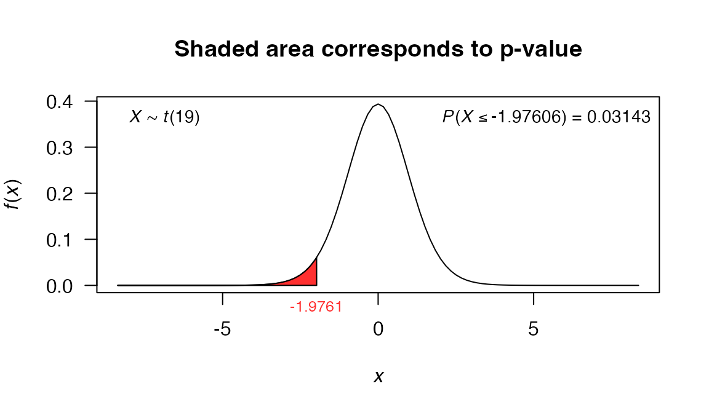
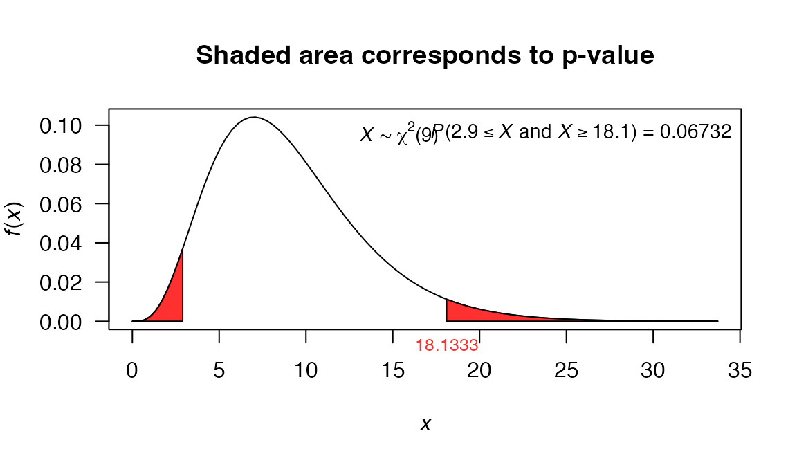

Univariate tests
Freddy Hernandez, Angie Lopez and Sara Garces
2025-09-10
Source:vignettes/univariate_tests.Rmd
univariate_tests.Rmd1) Introduction
In this vignette we explain how to use the functions available in the
stests package to hypothesis testing. Additionally, we
compare our functions with the built-in functions t.test
and var.test from stats package.
The functions covered in this vignette are:
-
z_test: function to perform z-test using values. -
z.test: function to perform z-test using vectors. -
t_test: function to perform t-test using values. -
t.test: built-in R function fromstatspackage to perform t-test using vectors. -
var_test: function to perform -test or F-test using values. -
var.test: fuction that generalizes thevar.testfunction fromstatspackage. This function uses vectors. -
print.htest: generic function to print objects withhtestclass. -
plot.htest: generic function to plot objects withhtestclass.
2) stests package
Any user can download the stests package from GitHub
using the next code:
if (!require('devtools')) install.packages('devtools')
devtools::install_github('fhernanb/stests', force=TRUE)Next, the package must be loaded into the current session using:
2.1) z-test for population mean
The objective in this type of problems is to test against:
- ,
- ,
- ,
using the information of a random sample from a Normal population with known variance .
2.1.1) z-test using z_test function
The z_test function can be used for students or
instructors to solve textbook’s problems in which the information is
summarized with values. In the next examples we show how to use this
function and it’s utility.
Example 10.3 (Walpole, 2012)
A random sample of 100 recorded deaths in the United States during the past year showed an average life span of 71.8 years. Assuming a population standard deviation of 8.9 years, does this seem to indicate that the mean life span today is greater than 70 years? Use a 0.05 level of significance.
In this example we have: , , . The objective is to test the next hypothesis:
Where representes the True average life span today (years).
The code to perform the test with significance is:
test1 <- z_test(meanx=71.8, nx=100, sigma2=79.21, mu=70, alternative='greater')
test1
##
## Z test for mean
##
## data: x
## Z = 2.0225, p-value = 0.02156
## alternative hypothesis: true is greater than 70
## 95 percent confidence interval:
## 70.33608 Inf
## sample estimates:
## mean of x
## 71.8We can observe that the output provides a p-value and a confidence interval for the population mean that will help the user in the decision making of the hypothesis test.
If we want to depict the p-value for the test, we could save the
result in an object and then use the plot.htest function as
follows:
plot(test1, shade.col='firebrick1', col='firebrick1')
2.1.2) z-test using z.test function
The z.test function can be used to solve problems in
which we have the raw data as a vector. In the next examples we show how
to use this function.
Example 8.8 (Devore, 2016)
A dynamic cone penetrometer (DCP) is used for measuring material resistance to penetration (mm/blow) as a cone is driven into pavement or subgrade. Suppose that for a particular application it is required that the true average DCP value for a certain type of pavement be less than 30. The pavement will not be used unless there is conclusive evidence that the specification has been met. Let’s state and test the appropriate hypotheses using the following data:
In this example we have: . The objective is to test the next hypothesis:
where represents the True average DCP value for a certain type of pavement.
In this example we don’t know if the random sample comes from a normal population, but as and is unkown, we can use the z-test with , .
The code to perform the test with significance is:
x<-c(14.1, 14.5, 15.5, 16.0, 16.0, 16.7, 16.9, 17.1, 17.5, 17.8, 17.8,
18.1, 18.2, 18.3, 18.3, 19.0, 19.2, 19.4, 20.0, 20.0, 20.8, 20.8,
21.0,21.5, 23.5, 27.5, 27.5, 28.0, 28.3, 30.0, 30.0, 31.6, 31.7,
31.7, 32.5, 33.5, 33.9, 35.0, 35.0, 35.0, 36.7, 40.0, 40.0, 41.3,
41.7, 47.5, 50.0, 51.0, 51.8, 54.4, 55.0, 57.0)
test2 <- z.test(x=x, sigma2=var(x), mu=30, alternative='less')
test2
##
## One Sample z-test
##
## data: x
## Z = -0.72816, p-value = 0.2333
## alternative hypothesis: true mean is less than 30
## 95 percent confidence interval:
## -Inf 31.55912
## sample estimates:
## mean of x
## 28.76154
plot(test2, shade.col='firebrick1', col='firebrick1')
2.2) t-test for population mean and for the difference in means
The objective in this type of problems is to test against:
- ,
- ,
- ,
using the information of a random sample from a Normal population with unknown variance .
Also, we can test against:
- ,
- ,
- ,
using the information of two random samples and , both from populations with normal distributions and with unknown variances ,.
2.2.1) t-test using t_test function
The t_test function can be used for students or
instructors to solve textbook’s problems in which the information is
summarized with values. In the next examples we show how to use this
function and it’s utility.
Excercise 10.29 (Walpole, 2012): test on a single sample
Past experience indicates that the time required for high school seniors to complete a standardized test is a normal random variable with a mean of 35 minutes. If a random sample of 20 high school seniors took an average of 33.1 minutes to complete this test with a standard deviation of 4.3 minutes, test the hypothesis, at the 0.05 level of significance, that minutes against the alternative that minutes.
In this example we have: , , . The objective is to test the next hypothesis:
The code to perform the test with significance is:
test3 <- t_test(meanx=33.1, varx=18.49, nx=20, mu=35, alternative='less')
test3
##
## One Sample t-test
##
## data: meanx = 33.1, var = 18.49 and nx = 20
## t = -1.9761, df = 19, p-value = 0.03143
## alternative hypothesis: true mean is less than 35
## 95 percent confidence interval:
## -Inf 34.76258
## sample estimates:
## mean of x
## 33.1
plot(test3, shade.col='firebrick1', col='firebrick1')
Example 10.6 (Walpole, 2012): test on two samples with unknown but equal variances
An experiment was performed to compare the abrasive wear of two different laminated materials. Twelve pieces of material 1 were tested by exposing each piece to a machine measuring wear. Ten pieces of material 2 were similarly tested. In each case, the depth of wear was observed. The samples of material 1 gave an average (coded) wear of 85 units with a sample standard deviation of 4, while the samples of material 2 gave an average of 81 with a sample standard deviation of 5. Can we conclude at the 0.05 level of significance that the abrasive wear of material 1 exceeds that of material 2 by more than 2 units? Assume the populations to be approximately normal with equal variances.
In this example we have: , , , , , . The objective is to test the next hypothesis:
The code to perform the test with significance is:
test4 <- t_test(meanx=85, varx=16, nx=12,
meany=81, vary=25, ny=10,
alternative='greater', var.equal=TRUE, mu=2)
test4
##
## Two Sample t-test
##
## data: meanx = 85 , nx = 12 , meany = 81 and ny = 10
## t = 1.0432, df = 20, p-value = 0.1547
## alternative hypothesis: true difference in means is greater than 2
## 95 percent confidence interval:
## 0.6932903 Inf
## sample estimates:
## mean of x mean of y
## 85 81
plot(test4, shade.col='firebrick1', col='firebrick1')
2.2.2) t-test using t.test function
The t.test function can be used to solve problems in
which we have the raw data as a vector. In the next examples we show how
to use this function.
Example 8.9 (Devore, 2016)
Glycerol is a major by-product of ethanol fermentation in wine production and contributes to the sweetness, body, and fullness of wines. The article “A Rapid and Simple Method for Simultaneous Determination of Glycerol, Fructose, and Glucose in Wine” (American J. of Enology and Viticulture, 2007: 279-283) includes the following observations on glycerol concentration (mg/mL) for samples of standard-quality (uncertified) white wines:
Does the sample data suggest that true average concentration is something other than the desired value? (Assume that the population distribution of glycerol concentration is normal)
In this example we have: . The objective is to test the next hypothesis:
The code to perform the test with significance is:
x <- c(2.67, 4.62, 4.14, 3.81, 3.83)
test5 <- t.test(x=x, sigma2=var(x), mu=4, alternative='two.sided')
test5
##
## One Sample t-test
##
## data: x
## t = -0.57886, df = 4, p-value = 0.5937
## alternative hypothesis: true mean is not equal to 4
## 95 percent confidence interval:
## 2.921875 4.706125
## sample estimates:
## mean of x
## 3.814
plot(test5, shade.col='firebrick1', col='firebrick1')2.3) -test for population variance
The objective in this type of problems is to test against:
- ,
- ,
- ,
using the information of a random sample from a population with normal distribution.
2.3.1)
-test
using var_test function
The var_test function can be used to solve textbook’s
problems in which the information is summarized with values. In next
examples we show the utility of this function.
Example 7.7.1 (Wayne & Chad, 2013)
The purpose of a study by Wilkins et al. (A-28) was to measure the effectiveness of recombinant human growth hormone (rhGH) on children with total body surface area burns > 40 percent. In this study, 16 subjects received daily injections at home of rhGH. At baseline, the researchers wanted to know the current levels of insulin-like growth factor (IGF-I) prior to administration of rhGH. The sample variance of IGF-I levels (in ng/ml) was 670.81. We wish to know if we may conclude from these data that the population variance is not 600.
In this example we have: , . The objective is to test the next hypothesis:
The code to perform the test with significance is:
test6 <- var_test(varx=670.81, nx=16, null.value=600, alternative='two.sided')
test6
##
## X-squared test for variance
##
## data: varx = 670.81 and nx = 16
## X-squared = 16.77, df = 15, p-value = 0.6656
## alternative hypothesis: true variance is not equal to 600
## 95 percent confidence interval:
## 366.0509 1606.8235
## sample estimates:
## variance of x
## 670.81
plot(test6, shade.col='firebrick1', col='firebrick1')
2.3.2)
-test
using var.test function
The var.test function can be used to solve problems in
which we have the raw data as a vector. In the next examples we show how
to use this function.
Exercise 10.67 (Walpole, 2012)
The content of containers of a particular lubricant is known to be normally distributed with a variance of 0.03 liter. Test the hypothesis that against the alternative that for the random sample of 10 containers:
In this example we have: . The objective is to test the next hypothesis:
The code to perform the test with significance is:
x <- c(10.2, 9.7, 10.1, 10.3, 10.1, 9.8, 9.9, 10.4, 10.3, 9.8)
test7 <- var.test(x=x, null.value=0.03, alternative='two.sided')
test7
##
## X-squared test for variance
##
## data: x
## X-squared = 18.133, df = 9, p-value = 0.06732
## alternative hypothesis: true variance is not equal to 0.03
## 95 percent confidence interval:
## 0.02859731 0.20145242
## sample estimates:
## variance of x
## 0.06044444
plot(test7, shade.col='firebrick1', col='firebrick1')
2.4) F-test for equality of variances
The objective in this type of problems is to test against:
- ,
- ,
- ,
using the information of two random samples and , both from populations with normal distributions and with unknown variances ,.
2.4.1) F-test using var_test function
The var_test function can be used for students or
instructors to solve textbook’s problems in which the information is
summarized with values. In the next examples we show how to use this
function and it’s utility.
Example 9.14 (Devore, 2016)
On the basis of data reported in the article “Serum Ferritin in an Elderly Population” (J. of Gerontology, 1979: 521-524), the authors concluded that the ferritin distribution in the elderly had a smaller variance than in the younger adults. (Serum ferritin is used in diagnosing iron deficiency.) For a sample of 28 elderly men, the sample standard deviation of serum ferritin (mg/L) was 52.6; for 26 young men, the sample standard deviation was 84.2. Does this data support the conclusion as applied to men?
In this example we have:
,
,
,
.
The objective is to test the next hypothesis:
The code to perform the test with significance is:
test8 <- var_test(varx=2766.76, nx=28, vary=7089.64, ny=26,
null.value = 1, alternative='less',conf.level=0.99)
test8
##
## F test to compare two variances
##
## data: varx = 2766.76 , nx = 28 , vary = 7089.64 and ny = 26
## F = 0.39025, num df = 27, denom df = 25, p-value = 0.00935
## alternative hypothesis: true ratio of variances is less than 1
## 99 percent confidence interval:
## 0.0000000 0.9896927
## sample estimates:
## ratio of variances
## 0.3902539
plot(test8, shade.col='firebrick1', col='firebrick1')
2.4.2) F-test using var.test function
The var.test function can be used to solve problems in
which we have the raw data as a vector. In the next examples we show how
to use this function.
Exercise 10.77 (Walpole, 2012)
An experiment was conducted to compare the alcohol content of soy sauce on two different production lines. Production was monitored eight times a day.The data are shown here:
Assume both populations are normal. It is suspected that production line 1 is not producing as consistently as production line 2 in terms of alcohol content. Test the hypothesis that against the alternative that .
In this example we have:
,
.
The objective is to test the next hypothesis:
The code to perform the test with significance is:
line1 <- c(0.48, 0.39, 0.42, 0.52, 0.40, 0.48, 0.52, 0.52)
line2 <- c(0.38, 0.37, 0.39, 0.41, 0.38, 0.39, 0.40, 0.39)
test9 <- var.test(x=line1, y=line2, null.value = 1, alternative='two.sided')
test9
##
## F test to compare two variances
##
## data: line1 and line2
## F = 19.667, num df = 7, denom df = 7, p-value = 0.0008435
## alternative hypothesis: true ratio of variances is not equal to 1
## 95 percent confidence interval:
## 3.937342 98.233215
## sample estimates:
## ratio of variances
## 19.66667
plot(test9, shade.col='firebrick1', col='firebrick1')
3) References
- Devore, J. L. (2016), Probability and Statistics for engineering and the sciences, Cengage.
- Walpole, R. E., Myers, R. H., Myers, S. L. & Ye, K. (2012), Probability & Statistics for Engineers & Scientists, Prentice Hall.
- Wayne, D. & Chad, C. (2013), BIOSTATISTICS: A Foundation for Analysis in the Health Sciences, Wiley.